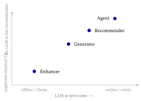
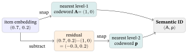
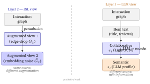
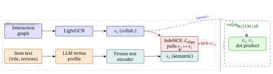
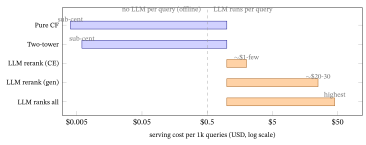

LLM × RecSys: the Landscape
1. Why bother? The complementarity thesis
Two families of recommender, each strong exactly where the other is blind:
| Collaborative filtering (From Graphs to LightGCN, SSL & Contrastive Learning, The Spectral / Graph-Filter View) | Large language models | |
|---|---|---|
| Learns from | the interaction graph (who clicked what) | a vast text corpus (the world’s writing) |
| Great at | the collaborative signal — “users like you also liked…” | semantics, world knowledge, reasoning, language |
| Blind to | meaning — LightGCN embeddings are featureless IDs (From Graphs to LightGCN §17); a brand-new item with no clicks is invisible (cold start) | the collaborative signal — an LLM has never seen your click logs; it doesn’t know item 4072 is co-watched with item 88 |
| Cost | cheap to serve (one dot product) | expensive (a forward pass of billions of parameters per query); can hallucinate items not in the catalog |
The thesis the whole field rests on: these are complementary. Collaborative filtering knows that two items go together but not why; an LLM knows why a sci-fi fan might like a particular space opera but not who actually co-watches them. Almost every LLM-for-recsys method is an answer to one question — how do you combine the LLM’s semantics with the collaborative signal? — and the methods differ mainly in what job they hand the LLM.
The one-line map. Give the LLM the whole job → LLM-as-recommender (§2.1) and generative recommendation (§2.2). Give it a supporting job feeding a classical model → LLM-as-enhancer (§2.3). Wrap it in a loop with tools and memory → agentic (§2.4). The trade-off is always the same axis: how much LLM you put on the serving path (power and cost) vs how much you keep the cheap collaborative backbone (speed and the signal LLMs lack).
2. The four roles an LLM can play
The cleanest taxonomy is by the LLM’s job, not by its architecture. Four roles, with their headline trade-off:
| Role | What the LLM does | Representative work | Advantage | Disadvantage |
|---|---|---|---|---|
| 2.1 Recommender | reads the user’s history as a prompt and ranks/selects items directly | TALLRec (RecSys’23), P5 (RecSys’22), LlamaRec | zero/few-shot, cold-start, reasoning, explainable | slow at serve time; weak on pure collaborative signal; can name out-of-catalog items; hard to scale to millions |
| 2.2 Generator | generates the item’s identifier token-by-token (semantic IDs) — recommendation as generation | TIGER (NeurIPS’23), generative retrieval | no candidate set; captures item content; one compact model | semantic-ID construction is fragile; decoding pitfalls; still maturing for huge catalogs |
| 2.3 Enhancer | produces semantic features/profiles that feed or align with a classical model (the LLM never serves) | RLMRec (WWW’24), KAR (RecSys’24), EasyRec | keeps the cheap, strong CF backbone; adds semantics + cold-start; LLM runs offline | needs an alignment/fusion mechanism; quality hinges on profile + alignment design |
| 2.4 Agent | plans, remembers, and calls tools over multi-turn conversation | agent surveys (2025), conversational RS | interactive, explainable, handles open-ended requests | early-stage; evaluation is hard; latency and cost compound |
How this maps to the field’s surveys. This by-the-LLM’s-job cut is the teachable cross-section of two canonical taxonomies. Wu et al. (A Survey on Large Language Models for Recommendation, WWW Journal 2024) split the field top-down into discriminative — the LLM enhances/encodes features for a classical model (our §2.3) — vs generative — the LLM produces the recommendation (our §2.1–§2.2). Lin et al. (How Can Recommender Systems Benefit from LLMs, ACM TOIS 2024, the most-cited LLM4Rec survey) instead use two orthogonal axes: WHERE the LLM sits in the pipeline — their five stages are feature engineering · feature encoder · scoring/ranking · user interaction · pipeline controller — × HOW it is adapted (tune the LLM or not × keep a conventional model or not). The four roles below collapse those views into one question — what job does the LLM do — and the §3 deep dive lives in the enhancer cell (discriminative · encoder-side · conventional-model-retained), the production-dominant choice.
The next four subsections take each in turn.

2.1 LLM-as-Recommender — the LLM is the ranker
How it works. Serialize the user’s history into a prompt — “A user watched Titanic, The Notebook, La La Land. From [candidate list], which will they watch next?” — and let the LLM rank or pick. Zero-shot uses a frozen model; TALLRec (Bao et al., RecSys’23) instead fine-tunes Llama on a small set of recommendation instructions, which sharply improves it. P5 (Geng et al., RecSys’22) was the unifier: cast every recommendation task (rating, sequential, explanation) as text-to-text on a single T5, the “Pretrain, Personalized Prompt & Predict” paradigm.
- Advantage. Inherits the LLM’s world knowledge and reasoning, so it shines in cold-start and cross-domain settings where there’s little interaction data, and it can explain its picks in words.
- Disadvantage. It is slow and expensive at serve time (a billion-parameter forward pass per request), weak on the raw collaborative signal a tiny LightGCN nails, can hallucinate items outside the catalog, and struggles to rank against millions of candidates (you must pre-filter). It also carries systematic ranking biases: it favours items placed earlier in the prompt (position bias) and popular items regardless of fit (popularity bias) — both documented for zero-shot LLM rankers (Hou et al., 2024) and only partly fixable by careful prompting or bootstrapping the candidate order.
The production sub-pattern: LLM-as-reranker. That last point — “can’t rank millions” — is why, in practice, the LLM rarely ranks the whole catalog. It re-ranks a short candidate list (top \(50\)–\(200\)) that a cheap retriever or CF model already fetched — the retrieve-then-rerank funnel of Implementation Choices. A cross-encoder reading each (user, item) pair is the most common way an LLM actually touches a live recommender today.
2.2 Generative recommendation — recommend by generating the item
How it works. Like §2.1 the LLM generates the answer rather than scoring a candidate set — but here it generates a compact item identifier, not a natural-language pick (so §2.1 and §2.2 are the two generative flavors, vs §2.3’s discriminative one). This line builds on sequential ID recommenders — SASRec and BERT4Rec (Representation Learning & the Transformer §4.4), which already predict the next item ID from a user’s history — but replaces their fixed per-item ID with a generated, content-derived code. Give each item a Semantic ID — a short sequence of discrete tokens derived from its content (e.g. encode the item’s text with a sentence model, then quantize the embedding into codewords: replace the continuous vector with the nearest entry — the codeword — from a small learned codebook of prototype vectors, turning a real-valued vector into a few discrete symbols, exactly like rounding a colour to the nearest crayon in a fixed box) — and train a sequence model to autoregressively generate the next item’s Semantic ID, exactly as a language model generates the next word. TIGER (Rajput et al., NeurIPS’23) introduced this. Because similar items share codeword prefixes, the model generalizes to items it barely saw, and there is no candidate list to maintain.
Worked micro-example — a Semantic ID by quantization. Say an item’s (tiny) text embedding is \((0.7,0.2)\). Snap it to the nearest entry of a \(4\)-word codebook \(\{(1,0),(0,1),(-1,0),(0,-1)\}\) — the closest is \((1,0)\), so the first code is A. Subtract it; the residual \((-0.3,0.2)\) is snapped against a second-level codebook and lands exactly on its codeword p \(=(-0.3,0.2)\) (a zero-distance hit; this level-2 codebook is illustrative — Exercise 4 specifies its own). The item’s Semantic ID is the tuple \((\textsf{A},\textsf{p})\) — and a similar item (nearby embedding) shares the A prefix, which is exactly why a sequence model can generalize to items it barely saw. (This is residual quantization, the construction TIGER uses; numbers checked in code.)

How the codebook is learned (RQ-VAE). The worked example snapped to a given codebook — but where does a good codebook come from? TIGER fits one with an RQ-VAE (a residual-quantized variational autoencoder): an encoder maps the item’s content embedding to a vector; that vector is quantized level-by-level (each level snaps the residual the level above left over, exactly as in the example); and a decoder must reconstruct the original embedding from the chosen codewords. Training the encoder, decoder, and codebooks together to minimize reconstruction error is what forces the codewords to be informative — semantically similar items come to share high-level codewords (the shared A prefix above), which is the entire point. The codebook is not handed to you; it is fitted so that a handful of discrete symbols preserve the item’s content.
How you decode a recommendation (and the collision catch). At serving time the user’s history becomes a sequence of Semantic IDs, and the seq2seq (sequence-to-sequence) model autoregressively generates the next item’s ID tuple, one codeword at a time. To get a ranked top-\(K\) list — not just a single item — you run beam search: keep the \(B\) most-probable partial ID prefixes at each step, and the completed tuples, ordered by probability, are the recommendations — produced with no ANN index over millions of items (generation replaces the retrieval step of Training and Serving a Recommender). Two practical catches the bullets below point at: distinct items can quantize to the same tuple (a collision), so TIGER appends one extra disambiguating token to keep every ID unique; and a beam can in principle spell a tuple that names no real item — TIGER reports these are rare (a small fraction) and need no special handling; the general cure, when one is needed, is the constrained decoding of the box below (restrict generation to valid IDs).
- Advantage. One end-to-end model; no separate retrieval index; content is baked into the ID, helping the long tail and cold start.
- Disadvantage. Everything rides on the Semantic-ID construction (a bad quantizer caps performance); autoregressive decoding has its own failure modes; and scaling to industrial catalogs was long an open engineering problem (now partly answered — see below).
Now deployed at industrial scale (2025). That “open at scale” caveat is the one that just moved. OneRec (Deng et al., 2025) runs an end-to-end generative retrieve-and-rank model in production at Kuaishou — one generative model replacing the classical retrieve-then-rank cascade, tuned by iterative DPO preference alignment — and reports a +1.6% online watch-time lift in the main feed. Generative recommendation over an industrial catalog is therefore no longer purely research: it is production-proven at (so far) a handful of very large platforms.
Grounding the output (the hallucination cure). A free-text LLM ranker (§2.1) generates token sequences with no guarantee they name real catalog items — it can confidently recommend a film that does not exist. Three standard fixes: constrained decoding (restrict generation to the item/ID vocabulary), candidate-list forcing (choose only from a retrieved shortlist — the reranker pattern above), and post-hoc catalog filtering (drop any generated item not in the catalog). Generative recommendation (§2.2) makes that far rarer by construction: a Semantic ID is assembled from real codewords, so a decoded tuple almost always names a real item — the few that do not are filtered out, where a free-text title can invent anything.
2.3 LLM-as-Enhancer — the LLM feeds a classical model (the focus of §3)
How it works. Keep a fast classical recommender (matrix factorization, or a LightGCN graph model) as the thing that actually serves. Use the LLM offline to manufacture semantic signal the classical model lacks, then fuse it in:
- Knowledge augmentation — KAR (Xi et al., RecSys’24): prompt the LLM for reasoning about a user (“likes slow-burn romance”) and factual knowledge about an item, encode both, and feed them as extra features through a mixture-of-experts (MoE) adapter — a small trained gate that routes each feature to one of several specialist sub-networks (“experts”), letting the backbone absorb the LLM’s signal without retraining — into any backbone.
- Representation alignment — RLMRec (Ren et al., WWW’24): have the LLM write a profile for each user and item, embed it, and align that semantic embedding with the collaborative embedding of a CF backbone. This is the line §3 unpacks.
Surveys split this branch in two: an enhancer emits features / knowledge / profiles (KAR, RLMRec), while an encoder emits embeddings the recommender consumes directly — but both keep the classical model on the serving path.
- Advantage. The serving path stays cheap and strong (the LLM is never called at query time); you add semantics and cold-start robustness on top of a proven collaborative model; it drops into existing backbones.
- Disadvantage. You need a fusion/alignment mechanism, and results hinge on the quality of the LLM profiles and of the alignment — a poorly aligned semantic space can hurt.
2.4 Agentic & conversational — the LLM as a planner with memory
How it works. Wrap the LLM in a loop: it plans, keeps memory of the dialogue and the user’s long-term preferences (often via retrieval-augmented memory), and calls tools (a retriever, the CF model, a database). A 2025 survey of LLM agents for recommendation (A Survey on LLM-powered Agents for Recommender Systems, EMNLP-Findings 2025) organizes these as recommender-oriented, interaction-oriented, and simulation-oriented agents; conversational recommenders let a user refine requests over several turns.
- Advantage. Interactive and explainable; handles open-ended, multi-constraint requests (“a feel-good film under 100 minutes my kids can watch”) that a one-shot ranker cannot.
- Disadvantage. Early-stage; evaluation is hard (no fixed ground truth for a conversation); latency and cost compound across turns.
3. The graph line, in depth — the LLM as a semantic second view
This is the role the RLMRec / enhancer line lives in, and it is the natural endpoint of From Graphs to LightGCN, SSL & Contrastive Learning, and The Spectral / Graph-Filter View. Read it as three layers stacked.
Layer 1 — the collaborative backbone (From Graphs to LightGCN). LightGCN gives every user and item a featureless ID embedding and refines it by propagating over the interaction graph; the score is a dot product \(e_u\!\cdot\!e_i\), trained with BPR (Losses & Regularizers §9). Strong collaborative signal — but the embeddings carry no meaning (From Graphs to LightGCN §17).
Layer 2 — self-supervised views (SSL & Contrastive Learning). SGL/SimGCL/LightGCL add a contrastive task: build a second view of each node (by graph or embedding perturbation) and pull a node’s two views together with InfoNCE while pushing different nodes apart. This regularizes the geometry (alignment + uniformity) and fights popularity bias — but the “second view” is still built from the same interaction data; no new outside information enters.
Layer 3 — the LLM as a better second view (RLMRec). The insight: instead of a perturbed copy of the collaborative embedding, make the second view a semantic one the LLM supplies.
┌─ LLM-as-enhancer pipeline (RLMRec on a LightGCN backbone)
│
│ interactions -> LightGCN -> collaborative e_i
│ text (reviews,
│ metadata, title) -> LLM writes profile
│ -> text encoder -> semantic s_i
│
│ train: BPR ranking + lambda * align(e_i , s_i)
│ align = InfoNCE pulling e_i <-> s_i
│ (the SSL contrastive loss, LLM profile = 2nd view)
│
│ serve: dot product e_u . e_i (the LLM is NOT called)
└─

The alignment objective, decoded. RLMRec maximizes the agreement between a node’s collaborative embedding \(e_i\) and its semantic embedding \(s_i\). The contrastive variant (RLMRec-Con) is exactly SSL & Contrastive Learning’s InfoNCE with the two views being \((e_i, s_i)\):
\[ \mathcal{L}_{\text{align}} \;=\; \sum_i -\log \frac{\exp\!\big(\operatorname{sim}(e_i,\,s_i)/\tau\big)} {\sum_{j}\exp\!\big(\operatorname{sim}(e_i,\,s_j)/\tau\big)} . \]
Per component: \(e_i\) is the collaborative embedding of node \(i\) (from LightGCN); \(s_i\) is its semantic embedding (a frozen text-encoder applied to the LLM-written profile of \(i\)); \(\operatorname{sim}\) is cosine similarity; \(\tau\) is the temperature (Probability primer §3/§7). The numerator rewards a node’s own two views for agreeing — “this item’s collaborative identity should match what the LLM says it is”; the denominator sums over other nodes \(j\), pushing \(i\)’s collaborative embedding away from other items’ meanings. These are exactly the two forces SSL & Contrastive Learning names alignment (numerator: matched pairs close) and uniformity (denominator: everything else spread out) — see that chapter for the picture on the sphere. Minimizing \(\mathcal{L}_{\text{align}}\) therefore drags the collaborative space toward the LLM’s semantic space, injecting world knowledge that pure interactions never carried. (RLMRec-Gen is the generative cousin: instead of contrasting, it asks the model to reconstruct the semantic embedding from the collaborative one — both maximize the mutual information between the two views.)
The full training objective is then Losses & Regularizers’ recipe with one extra term — exactly the shape of SSL & Contrastive Learning’s joint loss:
\[ \mathcal{L} \;=\; \underbrace{\mathcal{L}_{\text{BPR}}}_{\text{rank}} \;+\; \lambda\,\underbrace{\mathcal{L}_{\text{align}}}_{\text{LLM semantic view}} \;+\; \underbrace{\lambda_2\lVert\Theta\rVert^2}_{\text{L2}} . \]
Does it work? Across six collaborative backbones (GCCF, LightGCN, SGL, SimGCL, DCCF, AutoCF) and three datasets (Amazon-book, Yelp, Steam), RLMRec gives a consistent, statistically significant lift — the semantic view helps on top of an SSL backbone like SimGCL, not just a bare one, and the gain is largest where collaborative signal is thinnest (sparse / cold items), exactly the long-tail regime traditional CF struggles with (Traditional RecSys §6; From Graphs to LightGCN §13). SSL & Contrastive Learning §7 owns the per-cutoff numbers (e.g. the LightGCN/Amazon-book figure) and the contrastive-vs-generative comparison; this chapter carries only the direction.
Why this is the sweet spot. It keeps the cheap, strong collaborative backbone on the serving path (a dot product — no LLM call per request), uses the LLM offline to enrich, and fuses semantics into the collaborative geometry rather than bolting a slow ranker on top. That is precisely the design space the LLM-as-enhancer line operates in: an LLM augmenting a graph-collaborative backbone, with the contribution living in how the semantic signal is produced and aligned.
4. Choosing a role — a decision guide
| If your constraint is… | …reach for | because |
|---|---|---|
| Low serving latency / huge catalog | Enhancer (§2.3) — LLM offline, CF serves | the only LLM cost is offline; serving stays one dot product |
| Severe cold-start / little interaction data | Recommender (§2.1) or Enhancer | the LLM’s world knowledge substitutes for missing clicks |
| No retrieval index / content-rich items | Generator (§2.2) — semantic IDs | content is baked into the ID; no candidate set to maintain |
| Open-ended, multi-turn requests | Agent (§2.4) | only a conversation can elicit and refine fuzzy intent |
| You already have a strong graph-CF model | Enhancer (§3) | align an LLM semantic view to it; keep everything you have |
| Semantic retrieval at scale, content-rich | Two-tower LLM-embedding retrieval (a hybrid) | embed users and items with an LLM offline, retrieve by ANN over those vectors at serve time — LLM semantics on the retrieval path, but still no per-query LLM call |
The hybrid worth naming: two-tower LLM-embedding retrieval. Between “the LLM serves” and “the LLM only enriches” sits a widely used middle road. Encode each item — and a user’s history — into a vector with an LLM-grade text embedder offline, then at serve time just do approximate nearest-neighbour (ANN) search over those vectors (the retrieve stage of Implementation Choices’ funnel). It is enhancer-class on cost (no LLM call per query — only an ANN lookup) yet carries the LLM’s semantics directly into retrieval, so a brand-new item is findable from its text alone. The natural full stack is then: two-tower LLM-embedding retrieval \(\to\) cheap CF/heuristic candidates \(\to\) optional LLM-as-reranker on the top-\(K\) (§2.1). It is a practitioner default when content matters and the catalogue is large.
The through-line. Move down this table and you put more LLM on the serving path — more power and flexibility, more cost and risk. The Enhancer/graph line (§3) is popular precisely because it buys the LLM’s semantics while paying its cost only once, offline.
The 2026 verdict, in one line. The enhancer (offline LLM, CF serves) is the deployable default everywhere; two-tower LLM-embedding retrieval is the standard hybrid when content matters; generative recommendation (Semantic-ID, OneRec-style) is production-proven only at a few very large platforms; and LLM-as-recommender stays a reranker on a short list. Push the LLM further down the serving path only when you can pay for it.
4.1 Cost & latency — the orders of magnitude (dated)
Prices and millisecond figures move monthly, so reason in orders of magnitude, not exact numbers. The serving cost of a recommender is dominated by whether an LLM runs per query — that single fact spans roughly three to four orders of magnitude. (Anchors below: filtered ANN latency from the Implementation Choices vector-store benchmark; reranking latency/cost from a public mid-2026 reranking study — re-measure on your hardware and traffic.)
| Pattern | LLM call per query? | Serve latency (order) | Serve cost / 1k queries (order) |
|---|---|---|---|
| Enhancer / pure CF (dot product over an ANN index, §2.3, §3) | no | single-digit ms | sub-cent (no model call) |
| Two-tower LLM-embedding retrieval (ANN over offline LLM vectors) | no | single-digit–tens of ms | sub-cent (ANN only; embeddings precomputed) |
| LLM-as-reranker (specialist cross-encoder on top-\(K\), §2.1) | yes, on a short list | tens of ms | \(\sim\!\$1\)–few |
| LLM-as-reranker (a general LLM, pointwise over \(K\)) | yes, \(K\) calls | seconds | \(\sim\!\$20\)–30 |
| LLM-as-recommender / generator (LLM ranks/generates, §2.1–§2.2) | yes, the core step | hundreds of ms–seconds | highest |
Read it as a ladder. The first step is the big one: a pure-CF serve makes no model call, so adding any per-query model — a specialist cross-encoder on a top-\(K\) shortlist — already lifts cost by two-plus orders of magnitude (sub-cent \(\to\sim\!\$1\)–few) while adding only tens of ms. Swapping that cross-encoder for a general LLM scoring the same list pointwise costs another \(\sim\!10\times\) (\(\sim\!\$2\to\sim\!\$25\) / 1k) and turns tens of ms into seconds (one sequential LLM call per candidate). That is why production keeps the LLM offline (Enhancer) or confined to a short reranked list — and why “the LLM ranks the whole catalogue” stays rare. The offline price is real but bounded: RLMRec’s authors report its alignment adds only \(\approx 10\)–20% training time over the bare backbone, paid once. (Model picks + exact latencies: the Implementation Choices appendix’s retrieval and reranking sections.)

5. Open problems — the 2024–2026 frontier
- Do LLMs actually understand the collaborative signal? An LLM knows semantics, but co-occurrence (“people who bought X bought Y”) is learned from logs, not text. Recent work probes and tries to repair this gap — it is the central question for the Enhancer line, since a semantic view only helps if it aligns with real collaborative structure.
- RAG-for-recommendation — retrieval-augmented generation as a bridge role. A pattern that sits between the Enhancer and Agent is retrieval-augmented generation (RAG): at generation time, relevant item or user evidence (reviews, profiles, collaborative neighbours) is retrieved and inserted into the LLM’s prompt, letting the model ground its reasoning in actual catalog signal rather than relying on pretrained world knowledge alone. This blurs the Enhancer / Agent boundary and is an active design space (Gao et al., 2023). The same retrieval can also run offline — feeding retrieved neighbours into the LLM’s prompt while it writes item/user profiles for an Enhancer, not only at serve time.
- Fairness and diversity of LLM rankers. LLM-based rankers can amplify popularity and demographic biases present in their pretraining corpora, raising an open problem: how to audit and correct for distributional unfairness (across item popularity, provider exposure, and user demographic groups) when the ranker is a black-box billion-parameter model.
- LLM-based user simulators and synthetic-interaction generation. An emerging evaluation and data-augmentation direction treats the LLM as a user simulator — generating synthetic interaction sequences (e.g. RecAgent-style multi-agent simulation) to stress-test recommenders, bootstrap training data for cold-start items, or study long-horizon feedback loops; Wang et al. (RecAgent, 2023) is an early reference, and the validity of simulator-generated data vs real logs remains an open measurement question.
- Evaluation integrity. LLMs may have seen the test items in pretraining (data leakage); conversational/agentic systems have no fixed ground truth; and LLM-in-the-loop recommenders can amplify feedback loops and popularity bias. Honest evaluation (the Probability primer’s significance testing §8; the metrics of Evaluation Metrics) matters more, not less. Guard it with the protocol of Evaluation Metrics §11 plus three LLM-specific moves: time-based splits (test only on interactions after the model’s knowledge cutoff), held-out or obfuscated item IDs (so the LLM cannot recognise a title it memorised in pretraining), and stating whether candidates were retrieved or sampled (an LLM silently ranking against easy random negatives looks far better than it is).
- Cost and scale. Serving LLM rankers under tight latency budgets remains largely unsolved at scale — a major reason the offline-Enhancer pattern dominates production. Generative recommendation over industrial catalogs, long in the same bucket, is the part that just moved: OneRec (Deng et al., 2025) is deployed end-to-end at Kuaishou (+1.6% watch-time via iterative DPO), so the honest status is now “unsolved in general, but production-proven at a few large platforms.”
- Where the long tail meets semantics. The clearest, most defensible win is cold-start / long-tail items, where collaborative signal is absent but text is plentiful — the regime where an aligned semantic view adds the most (and where careful, per-bucket evaluation, not just top-line NDCG, is essential).
- Where enhancer-line work fits. Squarely in §3’s Enhancer line: an LLM augments a graph-collaborative backbone (LightGCN + SSL), and the research contribution is in how the semantic signal is generated and aligned — the density/quality of the LLM-produced views, evaluated with the rigor floor a top venue expects.
- Multimodal recommendation — a richer enhancer branch. The enhancer taxonomy in §2.3 implicitly assumes items are described by text alone. Real catalogs are richer: a fashion item is an image (visual style) + a title (text) + an ID (interaction). Multimodal recommenders fuse all three — e.g. an image encoder (CLIP-grade) produces a visual embedding, a text encoder produces a semantic one, and a graph backbone produces a collaborative one, then a learned fusion layer (concatenation, gating, or cross-attention) combines them before alignment. BM3 (Zhou et al., WWW ’23) is a representative: it builds three modal views — image, text, ID — and aligns them with a negative-free, dropout-based self-supervised objective (the bootstrap latent of its title), gaining especially on cold-start items where the ID embedding is weak but image + text remain. The lesson for §3’s alignment framework: the “second view” need not be text-only, and adding a visual view is a natural extension whenever item images are available.
- Instruction-tuned sequential LLM recommenders — a distinct sub-role within §2.1. A subtlety glossed in §2.1: there is a meaningful difference between a frozen LLM ranking a candidate list (zero-shot, §2.1) and a fine-tuned LLM that takes a user’s entire interaction sequence and generates the next item by name — trained end-to-end on recommendation instructions. BIGRec (Bao et al., 2024) grounds this: the model is instruction-tuned on a task of the form “Given the sequence A, B, C, …, predict the next item”, then uses constrained decoding (§2.2’s hallucination cure) to ensure the output is a real catalog item. This is distinct from generative retrieval (§2.2), which generates a Semantic ID rather than a natural-language title, and from the zero-shot ranker of §2.1, which never sees instruction data. It exposes a clean open problem: instruction-tuned sequential recommenders absorb collaborative sequence patterns without a graph backbone — when does that beat, and when does it lose to, an aligned enhancer?
- Reasoning recommenders — the post-R1 frontier. After DeepSeek-R1 made RL-trained chain-of-thought cheap, the same idea is reaching recommendation: rather than an LLM that implicitly predicts an item, a model that reasons in text, then recommends. OneRec-Think (Liu et al., 2025) adds explicit, controllable in-model reasoning to the OneRec generative recommender, trained with a recommendation-specific RL reward (validated at Kuaishou); the analogous move in document ranking — Rank-R1 (arXiv:2503.06034), an RL-trained reasoning reranker — shows the pattern is general. The open question is whether explicit reasoning earns its serving cost when the output is a ranked list rather than a derivation.
6. Exercises
Ten problems that exercise the survey end to end — most ask you to classify a scenario into one of the four roles or reason about a trade-off, with two small computes drawn straight from the chapter’s own numbers (§2.2’s quantizer, §4.1’s cost ladder). Everything is solvable from this chapter alone; no figure is needed, and where a number appears it is a tiny round one. Each is tagged (compute) / (concept) / (extend) / (apply). Full worked solutions are in the Solutions appendix at the back of this chapter.
E1. (apply) — Classify five deployments into the four roles. For each, name the role (recommender §2.1, generator §2.2, enhancer §2.3, agent §2.4) and give the one-clue tell: (a) A frozen Llama is handed a prompt “User watched A, B, C; from this list of 50, pick the next” and returns a ranked pick. (b) Offline, an LLM writes a one-paragraph taste profile for every user; the profile is embedded and pulled toward each user’s LightGCN vector during training; at serve time only a dot product runs. (c) A single sequence model emits an item’s identifier token-by-token — (A, p, …) — with no candidate list anywhere in the system. (d) A chatbot refines “a feel-good film under 100 min my kids can watch” over several turns, calling a retriever and the catalog DB between messages. (e) An LLM is prompted for factual knowledge about each item, which is encoded and fed through a trained MoE gate into an existing ranking backbone that does the serving.
E2. (concept) — The trade-off axis. §1 and the §2 table claim the four roles sit on one axis. State that axis in a sentence, then order the four roles along it from “cheapest at serve time / least LLM on the serving path” to “most.” Which single fact, more than any other, sets a recommender’s serving cost?
E3. (compute) — The cost cliff, in orders of magnitude. Use §4.1’s anchors: a pure-CF / enhancer serve costs about $0.006 per 1k queries (no model call); a general-LLM reranker scoring a short list costs about $25 per 1k queries. (a) By what factor is the general-LLM path more expensive — and how many orders of magnitude is that? (b) At 1,000,000 queries/day, what does each path cost per day? (c) A specialist cross-encoder reranker is about $2 per 1k. Roughly how many times cheaper is it than the general LLM, and how many times more expensive than pure CF? (Round to one significant figure.)
E4. (compute) — A Semantic ID by residual quantization. Reusing §2.2’s quantize→codeword recipe: an item’s tiny text embedding is \((0.7,\,0.4)\). The level-1 codebook is §2.2’s \(\{\textsf{A}=(1,0),\ \textsf{B}=(0,1),\ \textsf{C}=(-1,0),\ \textsf{D}=(0,-1)\}\). (a) Snap \((0.7,0.4)\) to the nearest codeword (by Euclidean distance) — which letter, and what is the residual (embedding minus chosen codeword)? (b) Snap that residual against the level-2 codebook \(\{\textsf{p}=(-0.3,0.4),\ \textsf{q}=(0.3,0.4),\ \textsf{r}=(-0.3,-0.4),\ \textsf{s}=(0.3,-0.4)\}\). What is the item’s Semantic ID tuple? (c) A second item has embedding \((0.6,0.5)\). Show it shares the same level-1 prefix, and say in one line why a sequence model can then generalize across the two items.
E5. (concept) — The alignment objective as InfoNCE. In §3’s \(\mathcal{L}_{\text{align}}\), identify what the two views \((e_i, s_i)\) are, what the numerator rewards, what the denominator pushes apart, and which two named forces from SSL & Contrastive Learning those correspond to. In one sentence, what does minimizing this loss do to the collaborative embedding space? (You need not re-derive the softmax — defer the InfoNCE mechanics to that chapter.)
E6. (concept) — Why the enhancer keeps the CF backbone on the serving path. RLMRec uses a billion-parameter LLM, yet §3 and §4.1 file it in the cheap corner. Explain the apparent paradox: where does the LLM run, what actually executes per live request, and what does the offline-LLM design buy you over an LLM-as-recommender that ranks at query time? (One paragraph.)
E7. (concept) — When not to reach for an LLM. Give two situations from this chapter where adding an LLM to the serving path is the wrong call, and name the cheaper backbone that wins instead. Then state the single condition under which an LLM’s semantic view adds the most over pure CF.
E8. (concept) — The two-tower hybrid. Describe two-tower LLM-embedding retrieval (§4): what is embedded with the LLM and when, what runs at serve time, and why it counts as “enhancer-class on cost” yet still carries LLM semantics. What property lets it find a brand-new item that pure CF cannot — and what is the natural full stack that places it ahead of an LLM reranker?
E9. (concept) — An evaluation caution. §5 warns that an LLM-as-recommender may post a suspiciously strong “zero-shot” number on a public benchmark. Name the leakage mechanism that can inflate it, explain in one line why it is a measurement problem rather than a modelling one, and give one honest-evaluation habit (from §5 / the Probability primer) that guards against fooling yourself.
E10. (extend / apply) — Pick a role for a product, then defend it on cost. A streaming startup has 2 million items, a strict sub-50 ms serving budget, an already-good LightGCN model, and a painful cold-start problem on newly added titles. (a) Which single role (§2.1–§2.4) best fits? Justify against each of the four constraints. (b) Using E3’s ladder, why does putting a general LLM on the per-query path break the latency budget? (One sentence of order-of-magnitude reasoning.) (c) Sketch the offline vs. serve split your choice implies, and name one thing you would still measure per cold-start bucket rather than trusting top-line NDCG.
7. How this wraps Tier 3
Tier 3 climbed a ladder: Traditional RecSys (similarity, matrix factorization) → Evaluation → From Graphs to LightGCN → SSL & Contrastive Learning → The Spectral / Graph-Filter View. This chapter is the capstone: it places that whole collaborative line inside the broader LLM × RecSys field and shows that the frontier most relevant here — the LLM as a semantic second view, aligned to a graph backbone — is the direct continuation of From Graphs to LightGCN and SSL & Contrastive Learning. Featureless ID embeddings (From Graphs to LightGCN) gained self-supervised views (SSL & Contrastive Learning) and now gain a semantic one (this chapter). The collaborative signal and the LLM’s world knowledge, finally on the same axis.
8. Glossary
| Term | Plain meaning |
|---|---|
| LLM | Large Language Model; maps text to vectors and generates text, carrying broad world knowledge. |
| Collaborative signal | What can be learned from who interacted with what (From Graphs to LightGCN, SSL & Contrastive Learning, The Spectral / Graph-Filter View), independent of item content. |
| Cold start | A new user/item with (almost) no interactions, so pure CF has nothing to go on. |
| LLM-as-recommender | The LLM directly ranks/selects items from a prompt of the user’s history (§2.1). |
| LLM-as-reranker | The most-deployed sub-pattern: the LLM (often a cross-encoder) re-scores a short top-\(K\) shortlist a cheap retriever already fetched, rather than ranking the whole catalogue (§2.1). |
| Two-tower LLM-embedding retrieval | A hybrid: embed users and items with an LLM-grade encoder offline, then retrieve by ANN over those vectors at serve time — enhancer-class cost, LLM semantics on the retrieval path (§4). |
| ANN (approximate nearest-neighbour) | Fast vector search that returns almost the closest vectors to a query, trading a little accuracy for large speed-ups — how embedding retrieval is served (Implementation Choices). |
| Generative recommendation | Recommend by generating an item’s Semantic ID token-by-token (§2.2). |
| Semantic ID | A short sequence of content-derived codewords identifying an item (quantized text embedding). |
| RQ-VAE | The residual-quantized variational autoencoder that learns the Semantic-ID codebooks by reconstructing the content embedding (§2.2). |
| Beam search (decoding) | Keep the \(B\) best partial ID prefixes per step; the completed tuples, ranked, are the top-\(K\) recommendations (§2.2). |
| LLM-as-enhancer | The LLM produces semantic features/profiles offline that feed/align with a classical model (§2.3). |
| RLMRec | An enhancer that aligns an LLM-written semantic embedding with a CF embedding via contrastive/generative alignment (§3). |
| Cross-view alignment | Pulling a node’s two embeddings (collaborative \(e_i\) and semantic \(s_i\)) together with InfoNCE. |
| Agentic recommender | An LLM that plans, remembers, and calls tools over multi-turn conversation (§2.4). |
9. References
Bao, K., Zhang, J., Zhang, Y., Wang, W., Feng, F., & He, X. (2023). TALLRec: An effective and efficient tuning framework to align large language model with recommendation. In Proceedings of the 17th ACM Conference on Recommender Systems (RecSys ’23). arXiv:2305.00447
Wang, L., et al. (2023). User behavior simulation with large language model based agents (RecAgent). arXiv:2306.02552
Gao, Y., et al. (2023). Retrieval-augmented generation for large language models: A survey. arXiv:2312.10997 (the RAG-for-recommendation reference of §5).
Bao, K., et al. (2024). A bi-step grounding paradigm for large language models in recommendation systems (BIGRec). ACM Transactions on Recommender Systems. arXiv:2308.08434
Geng, S., Liu, S., Fu, Z., Ge, Y., & Zhang, Y. (2022). Recommendation as language processing (RLP): A unified pretrain, personalized prompt & predict paradigm (P5). In Proceedings of the 16th ACM Conference on Recommender Systems (RecSys ’22). arXiv:2203.13366
Zhou, X., Zhou, H., Liu, Y., Zeng, Z., Miao, C., Wang, P., You, Y., & Jiang, F. (2023). Bootstrap latent representations for multi-modal recommendation (BM3). In Proceedings of the ACM Web Conference 2023 (WWW ’23). arXiv:2207.05969
He, X., Deng, K., Wang, X., Li, Y., Zhang, Y., & Wang, M. (2020). LightGCN: Simplifying and powering graph convolution network for recommendation. In Proceedings of the 43rd International ACM SIGIR Conference on Research and Development in Information Retrieval (SIGIR ’20). arXiv:2002.02126
Hou, Y., Zhang, J., Lin, Z., Lu, H., Xie, R., McAuley, J., & Zhao, W. X. (2024). Large language models are zero-shot rankers for recommender systems. In Proceedings of the 46th European Conference on Information Retrieval (ECIR). arXiv:2305.08845
Lin, J., Dai, X., Xi, Y., Liu, W., Chen, B., Zhang, H., Liu, Y., Wu, C., Li, X., Zhu, C., Guo, H., Yu, Y., Tang, R., & Zhang, W. (2024). How can recommender systems benefit from large language models: A survey. ACM Transactions on Information Systems, 43(2). https://doi.org/10.1145/3678004 arXiv:2306.05817 (Its WHERE axis has five stages: feature engineering · feature encoder · scoring/ranking · user interaction · pipeline controller.)
Peng, Q., Liu, H., Huang, H., Yang, Q., & Shao, M. (2025). A survey on LLM-powered agents for recommender systems. In Findings of the Association for Computational Linguistics: EMNLP 2025 (pp. 11574–11583). arXiv:2502.10050
Radford, A., Narasimhan, K., Salimans, T., & Sutskever, I. (2018). Improving language understanding by generative pre-training. OpenAI technical report.
Rajput, S., Mehta, N., Singh, A., Keshavan, R. H., Vu, T., Heldt, L., Hong, L., Tay, Y., Tran, V. Q., Samost, J., Kula, M., Chi, E. H., & Sathiamoorthy, M. (2023). Recommender systems with generative retrieval (TIGER). In Advances in Neural Information Processing Systems 36 (NeurIPS ’23). arXiv:2305.05065
Deng, J., Wang, S., Cai, K., Ren, L., Hu, Q., Ding, W., Luo, Q., & Zhou, G. (2025). OneRec: Unifying retrieve and rank with generative recommender and iterative preference alignment. arXiv:2502.18965
Liu, Z., et al. (2025). OneRec-Think: In-text reasoning for generative recommendation. arXiv:2510.11639
Ren, X., Wei, W., Xia, L., Su, L., Cheng, S., Wang, J., Yin, D., & Huang, C. (2024). Representation learning with large language models for recommendation (RLMRec). In Proceedings of the ACM Web Conference 2024 (WWW ’24). arXiv:2310.15950
Wu, L., Zheng, Z., Qiu, Z., Wang, H., Gu, H., Shen, T., Qin, C., Zhu, C., Zhu, H., Liu, Q., Xiong, H., & Chen, E. (2024). A survey on large language models for recommendation. World Wide Web, 27(60). https://doi.org/10.1007/s11280-024-01291-2 arXiv:2305.19860
Xi, Y., Liu, W., Lin, J., Cai, X., Zhu, H., Zhu, J., Chen, B., Tang, R., Zhang, W., Zhang, R., & Yu, Y. (2024). Towards open-world recommendation with knowledge augmentation from large language models (KAR). In Proceedings of the 18th ACM Conference on Recommender Systems (RecSys ’24). arXiv:2306.10933
Yu, J., Yin, H., Xia, X., Chen, T., Cui, L., & Nguyen, Q. V. H. (2022). Are graph augmentations necessary? Simple graph contrastive learning for recommendation (SimGCL). In Proceedings of the 45th International ACM SIGIR Conference (SIGIR ’22). arXiv:2112.08679
Cost/latency anchors in §4.1 are order-of-magnitude figures, not fixed prices: per-query LLM-reranking cost (specialist cross-encoder \(\sim\!\$2\)/1k vs general LLM \(\sim\!\$20\)–30/1k) from a public mid-2026 reranking study (ZeroEntropy, LLM-as-Reranker Guide, 2026); ANN p50 latency and reranker model picks from the Implementation Choices appendix; RLMRec’s “\(\approx 10\)–20% extra training time” from the RLMRec paper (Table 4 + §4.5). Re-measure on your own stack before quoting.
Online sources verified June 2026.